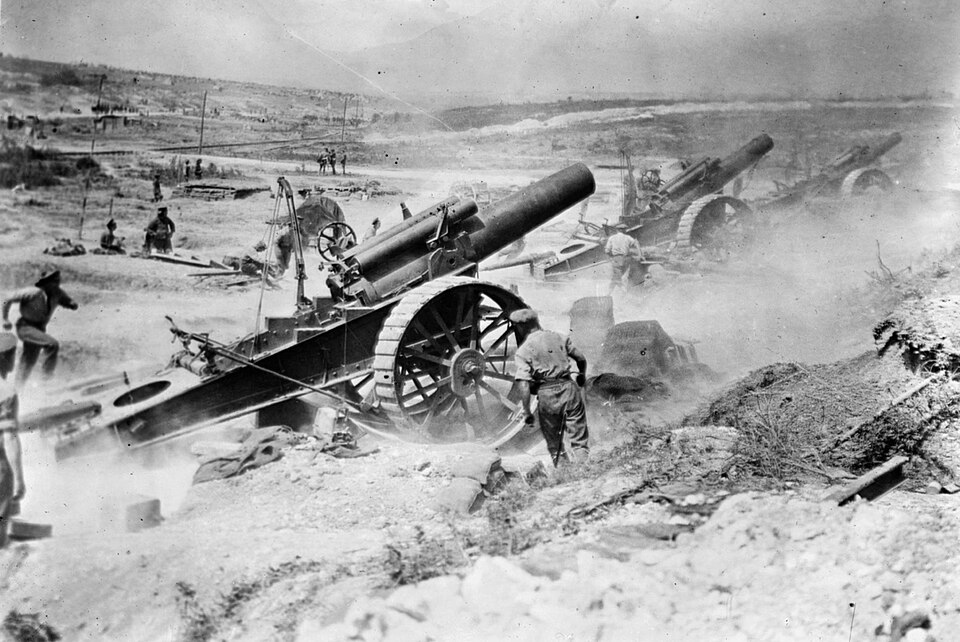

Weapons of the Great War
World War One transformed weaponry with rapid innovation: bolt-action rifles, rapid-fire machine guns, poisonous gas, tanks, and long-range artillery.
This page explores how those weapons were used, how they changed tactics, and how they affected soldiers and civilians alike.
